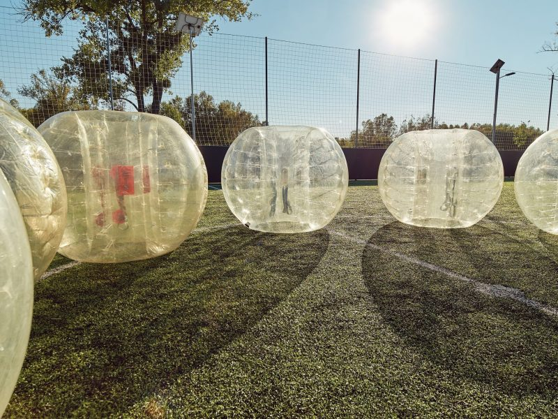
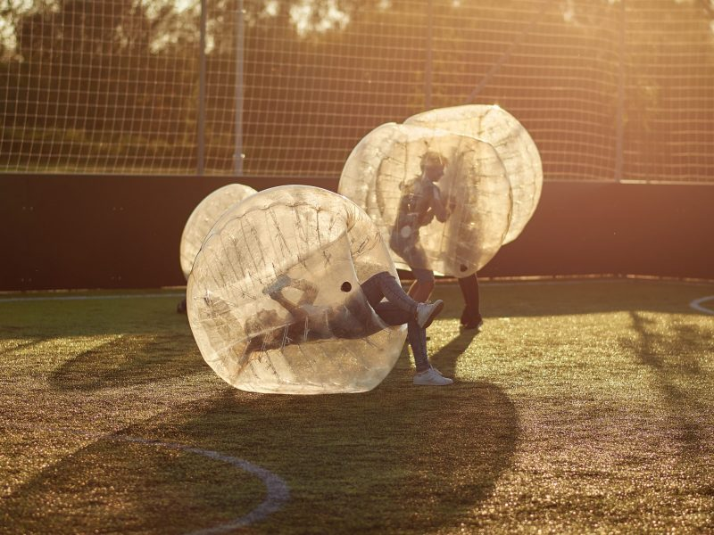
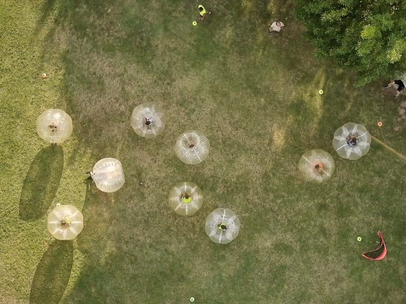
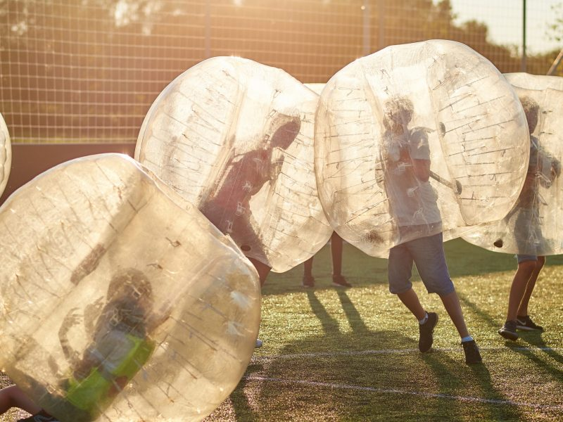

| Időtartam: | 1 óra |
| Program helyszíne: | Ditz Malom u. 26., sportpálya |
| Buborékgömbbel játszható játékok: | Buborékszumó: ~10x15m-es területen, 2 db 5 fős csapatnak egymást kell kilöknie a bójákkal kijelölt pályáról. Buborék-Kakukkfióka: 10 játékos 6 db bója körül sétál, majd jelre bóját kell foglalni. Szabály és végkifejlet hasonló, mint székfoglaló játéknál. Buborékfoci: 2 db 5 fős csapat “szabályok nélkül” focizik egymás ellen. |
| További információk | A foglalkozást animátor vezeti, aki többek között figyel a gömbbe bújás előtt a különféle csatok, ékszerek, szemüvegek, éles, hegyes tárgyak levételére, pályán kívüli elhelyezésére. Szemüvegben, tűsarkú és hegyes orrú cipőben játszani tilos. |
Az élmények kiteljesedését akár 3 féle játékunk, a taszigálós buborék szumó,
a “székfoglalós” kakukktojás és a klasszikus focizásra hajazó buborékfoci garantálja.
Részvételi díj a 2022/2023-as évre:
Buborékfoci:
25 főig: 82.2500 Ft/csoport
26 főtől: 3.290 Ft/fő
Programgazda-animátor díja: 16.000 Ft/csoport + 1.500 Ft kiszállási és üzemanyag költség
Kedvezmény (minimum 25 fős diáklétszám esetén):
2 fő kísérő pedagógus részvétele ingyenes
   